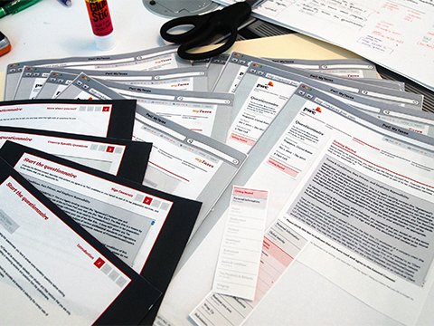

广东话有一句谚语：「嘢，係做唔完嘅」
其实，即是工作是永远做不完的意思，我觉得，这句正是最能体现当今所谓互联网思维的核心理念。
为什么这样说?
因为，现在的处境因为获取知识相对成本比以往要低得多，这当然带来了机遇，但同时，也令企业和个人带来各种前所未有的困难和挑战，包括：
- 看到希望做的方向和事情特别多
- 想要消化的信息量根本没时间处理
- 计划往往来不及转变，要么选择一成不变；要么朝令夕改，累得要死；要么无从入手，不知怎样改变
以往的执行方法和心态，我比较喜欢用「管控」这个字眼来说。通常希望先把范围（scope）或各种客观条件和情况定义好并相对不变，再跟据这大前提下作出各种精细分配，定制计划进度并有效运用所得资源。
这都建基于对外在环境和未来的有效预测和掌控。但，可惜的是，这个世界变了。
当您有天发现，原来有些公司，已经改变商业运作的玩法，能远比您更灵活和迅速去迎合市场改变，甚至创造机遇，您的竞争优势又会在那？ (可参考我之前的一篇文章《互联网新世界＝思维革命》)
要是说，客观的市场竞争和情况已不太可控和预测的情况下，那我们该怎么面对？
再进一步想想，要是接受了客观的环境和情况是不可控的这个现实，那何不，试试拥抱接受这个无可抗的现实，再想想怎样最好的对应这个情况？
也因此，近年在各领域兴起了不少的新理念和新方法，要细心留意的话，您会发现，这些理念其实都多少跟据上面的观点引伸出来，以拥抱改变为大原则而制订出的一套工作模式或方法。
拥抱改变的三大背后原则
新思维的演进，其实也跟互联网的发展一样，要用「快」这个字，倒不如说是洪流也不为过，更为贴切。
这些年由于工作关系，有幸更容易接触到形形式式各种的崭新思维。 可能我是一个不愿意随波逐流，人说什么我就会全单接收和认同的那类人。 我更多的会尝试思考理解背后的原因，尝试学会融汇贯通，并吸收以丰富一直以来适合自己的一套想法和风格。
那对我来说，这形形式式的理论背后都有着什么共同的法则？ 或许分享一下当中我的粗浅想法和领悟吧：
1. 可视化 Visualize
或许大家都会多多少少面对过以下情景：
- 部门或专业领域之间，根本没法好好沟通
- 你说你的，我说我的，其实双方一点也听不进去，彼此很难明白对方
- 管理者控制不了进度，不理解进展，对他们而言就是黑箱作业
- 执行部门往往又觉得管理部门完全不理解相关专业，没法体恤当中困难，甚至因为各琐事阻碍预定的进度，讨厌得很
- 最终结果，永远跟当初想法完全两回事
- 各自其实对事情都有自己一套的想法
试想下，当大家连说话都没法相互理解，又怎样可有效沟通，更枉论谈得上可有效协作了，您说是吗？
【有什么办法？】
共创一套简单易明的语言
想深一层，与其你说你的，我说我的，何不重新共同定义创建一套简单的，大家都容易明白理解的语言，大家都能明相对一致的理解，把各自专业的城墙拆除，让大家能好好沟通? 
【做法】
- 尽量不用任何文档，一来准备花时间，很多人其实也懒得看，要看也得花团队每个人不少时间，看了其实理解可能也差异不少
- 用图像说话
- 化繁为简，不着重形式，尝试思考用最简单直观的方式来表逹各种复杂的事情
- 将事件尽量铺开，一目了然
【一些例子】
 好像管理时，会把每个需求重新定义，以故事咭形式形容每个需求，合组起来形式故事墙，什么人在做，进展到什么阶段，全体每个人都一目了然。
好像管理时，会把每个需求重新定义，以故事咭形式形容每个需求，合组起来形式故事墙，什么人在做，进展到什么阶段，全体每个人都一目了然。
 把客户群重新定义，与其一堆市场调研的文档，不如创建一个个有血有肉的角色（我们叫personas)，以图像形式让团队对所针对的客户形成一个具体的印象，避免团队对客户的认识过份含糊笼统，或各自各有不一样的理解，没有达成一致。
把客户群重新定义，与其一堆市场调研的文档，不如创建一个个有血有肉的角色（我们叫personas)，以图像形式让团队对所针对的客户形成一个具体的印象，避免团队对客户的认识过份含糊笼统，或各自各有不一样的理解，没有达成一致。
 网页或产品怎么样，何不先用一些简单直观的方法让双方取得共识?
{kind=link}
 一个故事墙，远比你在电脑上的任何系统来得清楚、直接，计划进展一览无遗
一个故事墙，远比你在电脑上的任何系统来得清楚、直接，计划进展一览无遗
 就算演讲滙报，可以不再是沉闷的以论点或图表的显示形式，透过图像，或以情景故事形式，在受众群脑内先建构一个具体的易明的映像/场景，增加说服力，这也是可视化的其中一种体现。
就算演讲滙报，可以不再是沉闷的以论点或图表的显示形式，透过图像，或以情景故事形式，在受众群脑内先建构一个具体的易明的映像/场景，增加说服力，这也是可视化的其中一种体现。
2. 制定优先次序 Prioritize
公司在运作上，惯常的做法，都是先安排，后执行。 把手头上想到的方向先做好决策，安排好后就只会考虑执行细节，直至该任务完成为止。
这种想法很正常，因社会的运作一直都是实行责任机制。 那就意味着，无论在公司或个人立场来说，给付予的任务，或您已承诺做到的事情， 便无可避免的有绝对责任将它完成。
因此，很自然的，东西落实决定下来后， 需要负责的人或部自然不愿改变，以免徒增风险，浪费成本。 而因应时势随时改变，又谈何容易?!
【有什么办法？】
Not only work hard, work smart!
任何时间，该优先做最重要的事
其实，在营商的环境下，无论公司大小，资源其实永远都是有限的。 而当中，尤其是时间（更甚者时机），才是最宝贵最有限的资源，瞬间即逝。
当然，没错预先把时间资源安排好，好像能减低资源的浪费。 但，试想想，在现今市场需求急剧变化的环境下，就算任务完成，市场却转变了，可能是更大的浪费。
与其一直尝试将手头上想要做的工作计划怎样能完成， 何不换个角度想想…
其实我们该做的，是无时无刻，审视自己有限的资源， 最快速有效的调配资源去做最重要、最逼切和最值得做的事情。
有些计划，可能随之时间变得再没意义；相反，亦可能突如其来的点子才是公司现在最值得做的方向。 活在当下，把现在最需要做的事先做，才最重要。
【做法】
- 先建立一个信息透明的机制：把所有事细分为一个个的小任务，并以大家能相互理解并没有误会的方式表逹，务求将一切要做的事可视化
- 每件任务都需要估算此任务的重要性，究竟是必须要做(Must Have)，还是有也不错(Nice to Have)? 计划要是比较大型，可跟据重要程度以等级代替
- 想到任何新的点子，或任何需求或想做的事，不再是以是否在范围(scope)内去衡量，反正随意把任务写上就可以，不需在这个时候筛选
- 定时审视：每隔一段短时间就一起审视当时情况，选择下一个周期要做的事及优先次序，及审视已有及新增的任务，是否因应时势更改先前决定的重要性
【一些例子】
 就像查案一样，如果有新的想法或资料，您不会把资料先作审视，因您不想错过任何线索。但要管理那样庞大的资讯，比较可行的办法，是把资料尽量可视化，并用一个最直观原始的审视优先值的方法：重要的资料放在中间，占据较大篇幅，并定时审视手中线索。
就像查案一样，如果有新的想法或资料，您不会把资料先作审视，因您不想错过任何线索。但要管理那样庞大的资讯，比较可行的办法，是把资料尽量可视化，并用一个最直观原始的审视优先值的方法：重要的资料放在中间，占据较大篇幅，并定时审视手中线索。
 就像《互联网新世界＝思维革命》一文提及到， 我们会以personas,一些人物角色,去取代以往常做的customer segmentation方法。 我们不会规范角色的多少，也不用每个角色都做得具细无遗，甚至是一张照片要好。 拥有更多的背景资料的角色，自然也是比较著重的，正正也是优先排序(prioritize)的一种体现。
就像《互联网新世界＝思维革命》一文提及到， 我们会以personas,一些人物角色,去取代以往常做的customer segmentation方法。 我们不会规范角色的多少，也不用每个角色都做得具细无遗，甚至是一张照片要好。 拥有更多的背景资料的角色，自然也是比较著重的，正正也是优先排序(prioritize)的一种体现。
3. 可量化 Quantify
过往，我们在计划执行期间，甚少去考虑那个事项该做还是不做，那个事项先做还是后做也不是很重要。
因为事情本身在前期已经决定计划好了，也没有不做的余地，而且决定不是能随意改变的。同时间，完成那个事项的先后次序，其实对项目管理意义上是不大的。
但，就像上面第2点所提到，现在，我们需要做到的，是无时无刻因应情势，选择每个周期要做的任务和事项。 但…任务的数量是一直在变的情况下：
- 除了重要性之外，我们还能用什么衡量标准决定优先次序?
- 怎样为计划各种预测和估算?
- 怎样能掌握整个计划所需的大概时间？
- 那个时候需要增派人手资源等等管理和决策的问题？
【有什么办法？】
凡事不再是单纯的做或是不做的决定。而是，需要付出多少“点”去做这件事情
就像货币制度一样，我们创建了一个媒介，通过一个统一的单位，让我们能有一致的标准为任何物资或服务的价值数字化，促进交易的实行。
同样的，我们能否创造一个相类似的单位标准，像货币一样，让我们能相对一致衡量每个任务？
当然…以往我们也有这一套机制，大多的做法，多以多少人多少时间，或者是以工时/工作天去衡量一件任务。 但主要的出发点，在于前期的资源调配和落实，其实细心想想，这做法无助于后期实施时的资源调配。
【做法】
- 把任务细分为多个小任务，并以点数去量化每个任务所需付出的「成本」
- 团队先一起挑选认为一张认为是最少成本的任务咭，并把那咭的点数定为0.5分
- 接着将一些比较确切的任务，通过各任务咭的比较，团队共同为各咭片以0.5, 1, 2, 3的点数估算所算「成本」
- 现实上，其实存在很多不确定性，一些比较复杂而未深入探讨的大型任务，我们会称之为Epic，以估点也相对笼统，以5, 8, 13, 20…代替
- 因为在比较大型的任务上，估算为11, 12或13点其实也没有大意义，那个点数，其实主是给团队一个概念此复杂任务的所需成本，当任务排上日程后还是会把Epic细分为各小任务再估点。就像第二点所说，什么时候，只做最重要的事
- 实行以上的点数制度的最大得着，是是当所有任务以点数估算，并记录每周团队所能完成的点数，就能推算出团队的能力(capacity)，项目进展的速度(velocity)及跟据现在速率预测将会完成的时间
- 因此，要是项目的速率(velocity)变慢，又或是项目不能在deadline前完成。管理团队都能尽早发现并找出原因，也能及时运加大投入或把比较不重要的任务押后等不同手段确保项目按照计划完成
【一些例子】
 在项目管理上，我们会把任务简化为一张张故事咭，用简单易明的文字来形容业务需求，并设定它的优先值和点数
在项目管理上，我们会把任务简化为一张张故事咭，用简单易明的文字来形容业务需求，并设定它的优先值和点数
 定期记录每段时间所完成的点数，跟原先所做的预测做比较，项目进度的情况及效率就能一目了然，其实这除了用上可量化(quantify)的原则外，也是可视化(visualize)的一种体现
定期记录每段时间所完成的点数，跟原先所做的预测做比较，项目进度的情况及效率就能一目了然，其实这除了用上可量化(quantify)的原则外，也是可视化(visualize)的一种体现
以上的三个原则，其实不只改变了我一贯工作的形式，更多的，是启发并彻底改变了我在日常生活上的一贯做法和心态。
就如问别人意见等小细节上，不再是只问yes or no的问题，而是根据满意程度，喜欢程度等不同角度以1-10等量化方法，令我能更准确的跟据反馈再作思考。
而处事或想事情上，也想办法尽量把事情尽量可视化，并把东西铺开，并根据重要性和所需工作量(effort)，更有效利用和安排自己的时间或下一步计划。
时间和资源，永远都是有限，我们最后所想到的想法，现实中能做的都只能是一小部分，何不好好选择，right?
我想，这就是所谓的「互联网思维」当中的精髓吧。